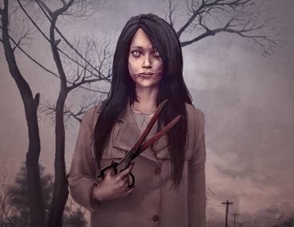

Si la mitología japonesa es rica en leyendas y seres extraños, la ciudad de Tokio se podría considerar como fuente y origen de muchas de ellas.
Quien visita este lugar puede encontrar numerosas historias y leyendas urbanas que hacen referencia al folclore típico de la zona. Narraciones que muchas veces han perdurado en el tiempo con el único fin de asustar a niños y turistas.
Narraciones, por otro lado, que no dejan de producir escalofríos a todo aquel que las escucha.
Japón no solo es tradición y espectaculares vistas a su alrededor, también es un país repleto de cultura y todo tipo de leyendas urbanas. Esto trae consigo que tengamos leyendas de todos los tipos, algunas hablando sobre el amor eterno y otras tantas caracterizándose por su enfoque de terror. Esta vez tenemos una leyenda que, a pesar de helar la sangre, trata de transmitir un importante mensaje.
Fue en el año 1978 cuando una leyenda comenzó a extenderse y que actualmente se conoce como Kuchisake onna. Esta comenzó cuando una mujer labradora de Yaotsu, en la prefectura de Gifu, decía haberse encontrado en un rincón de su jardín con una mujer con su boca abierta de oreja a oreja. Una historia que se publicó en los periódicos hablando de Kuchisake onna y que se fue propagando entre los niños, siendo cada vez más exagerada, a pesar de que todos afirman que existe un punto de verdad.

¿Cuál es la historia de Kuchisake Onna?
Cuenta la leyenda que hace muchos años una bellísima pero vanidosa mujer contrajo matrimonio con un destacado y respetable samurái. Al parecer la mujer era tan hermosa como promiscua, y es que además de contar con numerosos pretendientes que la seguían cortejando a pesar de su matrimonio, ella misma sucumbía a los placeres de la carne con muchos de ellos.
Su marido que al principio desconocía las prácticas extramatrimoniales de su joven esposa se enteró un día de todos los episodios de adulterio que había cometido.
Según cuenta la leyenda, el samurái entró en un estado de cólera increíble y se dirigió hacia su mujer cortándole la boca de lado a lado mientras le gritaba
“¿Crees que eres hermosa?”. Una vez hubo terminado de rajar completamente la boca de la joven terminó la faena diciéndole:
“¿Quién pensará que eres hermosa ahora?”
Una vez hecho esto, la mujer con la boca cortada falleció dejando a su marido con la eterna culpa de su muerte.
Otra versión cuenta que fue la esposa de un jardinero, quién era demasiado hermosa pero también muy vanidosa y egoísta y engañaba a su esposo con muchos hombres. Un día el jardinero la descubrió y entonces le dio un ataque de furia y celos, por lo que la atacó con unas tijeras de jardinería y le cortó la boca de lado a lado mientras gritaba:
“¿Aún piensas que eres hermosa?”
Y en otra versión un poco más moderna cuenta que, una década antes de los 70's, se le encontró a una mujer con dicha cortada después de un accidente automovilístico ocasionado por una discusión entre ella y su marido.
En todo caso, el marido se suicida debido al remordimiento y ella regresa del inframundo como un espíritu malicioso y vengativo, enfocado en cometer los mismos actos que causaron su deformidad.
¿Y qué dice su leyenda?
La leyenda asegura que es posible encontrar a este espíritu andando por las calles de la ciudad con una mascarilla quirúrgica en la boca (algo que no sorprende teniendo en cuenta las costumbres sanitarias de los japoneses).
Cuando el espíritu se cruza con algún joven simplemente se detiene frente a él y le pregunta
“¿Soy hermosa?”. Si dices que sí la mujer se arrancará la máscara y te preguntará
“¿Y ahora?” , en ese momento sus víctimas gritarán despavoridas y esta las asesinará cortándoles la cabeza al interpretar en sus alaridos un claro no.
Si la segunda vez que pregunta la respuesta es sí dará exactamente igual, ya que el espíritu reaccionará realizando el mismo corte en su víctima para que experimente su dolor.
Como se puede ver es bastante difícil escapar de la ira de este espectro. Aunque es cierto que la leyenda cuenta que existen ciertas formas de evitar su venganza. Si la persona asediada da una contestación lo suficientemente ambigua para que Kuchisake Onna se quede pensativa pensando en el significado de la respuesta, seguramente tendrá tiempo de escapar y correr lo suficiente para huir de sus tijeras.
También se dice que si ante la primera pregunta la víctima responde un educado
“lo siento, tengo mucha prisa” el espectro la dejará marchar haciendo uso de los buenos modales de la cultura japonesa.